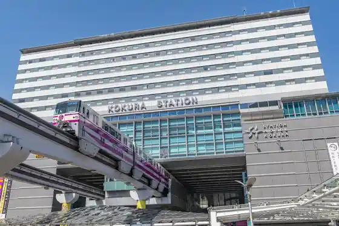
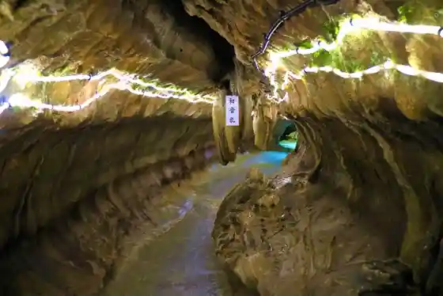
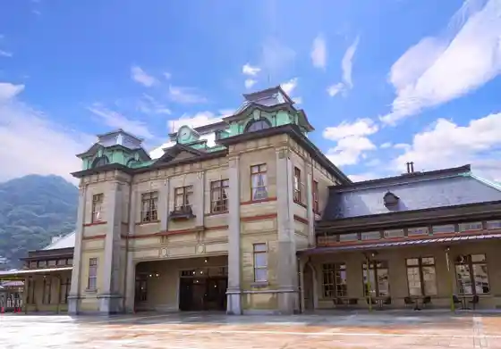
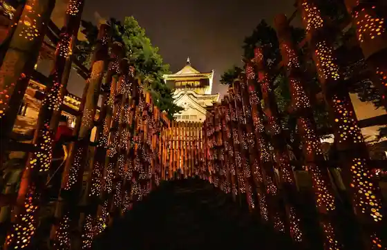

Hiraodai
Kitakyushu, Fukuoka · 093-453-3737 · Official / source link
Ogura Eria
Kitakyushu, Fukuoka · 093-541-4189 · Official / source link

Sen Hotoke Limestone Cave
Kitakyushu, Fukuoka · 093-451-0368 · Official / source link

JR Mojiko Eki
Kitakyushu, Fukuoka · 093-321-8843 · Official / source link

Kokurajo Take Akari
Kitakyushu, Fukuoka · 093-561-1210 · Official / source link

Tan Ka Market
Kitakyushu, Fukuoka · 093-521-4140 · Official / source link
Kitakyushu Opuntoppubasu
Kitakyushu, Fukuoka · 092-734-2727 · Official / source link
Buruuingu Moji
Kitakyushu, Fukuoka · 093-321-4151 · Official / source link
Sara Kurayama
Kitakyushu, Fukuoka · 093-671-4761 · Official / source link
Ai Shima (Kitakyushu)
Kitakyushu, Fukuoka · 093-582-3335 · Official / source link
Ishibashi Budo Sono
Kitakyushu, Fukuoka · 093-617-6929 · Official / source link
Kitakyushu Ritsu Hibikinada Ryokuchi Green Park
Kitakyushu, Fukuoka · 093-741-5545 · Official / source link
Wakame Kari Shrine
Kitakyushu, Fukuoka · 093-321-0749 · Official / source link
Mojiko Retoro Kanko Ressha (Shiokaze Go) Kitakyushu Ginko Retoro Line
Kitakyushu, Fukuoka · 093-331-1065 · Official / source link
Kitakyushu Ritsu Shizen Shi History Museum I no Chi no Tabi Museum
Kitakyushu, Fukuoka · 093-681-1011 · Official / source link
Kanmonkaikyo Museum (Kaikyo Doramashippu)
Kitakyushu, Fukuoka · 093-331-6700 · Official / source link
Mojiko Retoro Tembo Shitsu
Kitakyushu, Fukuoka · 093-321-4151 · Official / source link
Komoji Yama
Kitakyushu, Fukuoka · 093-561-1210 · Official / source link
THE OUTLETS KITAKYUSHU - Ji Autoretto Kitakyushu
Kitakyushu, Fukuoka · 093-663-7251 · Official / source link
Kawauchi Fuji Sono
Kitakyushu, Fukuoka · 093-652-0334 · Official / source link
Yoshitake Yutaka Yu Sono
Kitakyushu, Fukuoka · 093-451-0510 · Official / source link
Nishinihon Sogo Tenjijo Kitakyushu Messe (Kyu Tsusho : Nishinihon Sogo Tenjijo Shinkan) AIM 3F Kitakyushu Kokusaikaigijo
Kitakyushu, Fukuoka · Official / source link
Itozu no Mori Park
Kitakyushu, Fukuoka · 093-651-1895 · Official / source link
Mojiko Retoro Chiku
Kitakyushu, Fukuoka · 093-332-0106 · Official / source link
Kitakyushu Manga Museum
Kitakyushu, Fukuoka · 093-512-5077 · Official / source link
Tomigahana
Kitakyushu, Fukuoka · Official / source link
Wakame Kari Park Daini Lookout
Kitakyushu, Fukuoka · 093-322-1188 · Official / source link
Kichijoji
Kitakyushu, Fukuoka · 093-617-0237 · Official / source link
Majima
Kitakyushu, Fukuoka · 093-582-3339 · Official / source link
Kyumon Tsukasa Mitsui Kurabu
Kitakyushu, Fukuoka · 093-321-4151 · Official / source link
Idemitsu Art Museum (Moji)
Kitakyushu, Fukuoka · 093-332-0251 · Official / source link
Kokurajo
Kitakyushu, Fukuoka · 093-561-1210 · Official / source link
Hyakkiyagyo
Kitakyushu, Fukuoka · 093-561-1210 · Official / source link
Wakame Kari Park
Kitakyushu, Fukuoka · 093-331-1881 · Official / source link
Kyu Osaka Shosen Biru
Kitakyushu, Fukuoka · 093-321-4151 · Official / source link
Taka Toyama Park
Kitakyushu, Fukuoka · 093-582-2466 · Official / source link
Mojiko Yaki Kare
Kitakyushu, Fukuoka · 093-321-4151 · Official / source link
Oshika Limestone Cave
Kitakyushu, Fukuoka · Official / source link
Kaikyo Plaza
Kitakyushu, Fukuoka · 093-332-3121 · Official / source link
Sora Land Hiraodai (Hiraodai Nature no Sato)
Kitakyushu, Fukuoka · 093-452-2715 · Official / source link
TOTO Museum
Kitakyushu, Fukuoka · 093-951-2534 · Official / source link
Wakita Beach Umizuri Ri Sambashi
Kitakyushu, Fukuoka · 093-582-2086 · Official / source link
Ribauoku Kitakyushu
Kitakyushu, Fukuoka · 093-573-1500 · Official / source link
Kyumon Tsukasa Zeikan
Kitakyushu, Fukuoka · 093-321-4151 · Official / source link
Kashiwameshi no Tachi Uri
Kitakyushu, Fukuoka · 093-601-2345 · Official / source link
Iwaya Beach
Kitakyushu, Fukuoka · 093-741-1131 · Official / source link
Mori Ogai Kyukyo
Kitakyushu, Fukuoka · 093-582-2391 · Official / source link
Kitakyushu Tatsuko Sodate Fureai Koryu Plaza Genki no Mori
Kitakyushu, Fukuoka · 093-522-4150 · Official / source link
Supesu LABO (Kitakyushu Science Museum)
Kitakyushu, Fukuoka · 093-671-4566 · Official / source link
Kappa Village
Kitakyushu, Fukuoka · 093-741-6070 · Official / source link
Kitakyushu Tatsuko Domo no Kan HOW!?
Kitakyushu, Fukuoka · 093-642-5555 · Official / source link
Hana no Oka Park Kitakyushu Ritsu Sogo Noji Center
Kitakyushu, Fukuoka · 093-961-6045 · Official / source link
Kan'ei Hachiman Seitetsusho Kyuhon Jimusho Chobo Supesu
Kitakyushu, Fukuoka · 093-582-2391 · Official / source link
Hiraodai Shizenkansatsu Center
Kitakyushu, Fukuoka · 093-453-3737 · Official / source link
Kitakyushu Makaroni Seijin Penne no Bakemono (Uchu Shichiyo Hoshi no Sei)
Kitakyushu, Fukuoka · 093-582-2502 · Official / source link
no Foku Plaza
Kitakyushu, Fukuoka · 093-331-1881 · Official / source link
Matsumotoseicho Memorial Museum
Kitakyushu, Fukuoka · 093-582-2761 · Official / source link
Mojiko Retoro Osama no Tamago
Kitakyushu, Fukuoka · 093-321-0120 · Official / source link
Kawauchi Chosuichi
Kitakyushu, Fukuoka · 093-541-4189 · Official / source link
Tan Shima Shrine
Kitakyushu, Fukuoka · 093-371-8428 · Official / source link
Shinozaki Hachiman Shrine
Kitakyushu, Fukuoka · 093-561-6518 · Official / source link
Korona Baths Ogura Mise
Kitakyushu, Fukuoka · 093-581-5686 · Official / source link
Wakita Fisshamanzuwafu Shioiri Village Bussan Kan
Kitakyushu, Fukuoka · 093-742-4111 · Official / source link
Kurosaki Castle Ruins
Kitakyushu, Fukuoka · 093-642-1441 · Official / source link
Gamo Hachiman Shrine
Kitakyushu, Fukuoka · 093-962-6327 · Official / source link
Kokurajo Garden
Kitakyushu, Fukuoka · 093-582-2747 · Official / source link
Shiranoe Shokubutsu Park
Kitakyushu, Fukuoka · 093-341-8111 · Official / source link
Yomigatsu Ta Ogura Shoku
Kitakyushu, Fukuoka · 093-561-0505 · Official / source link
Nichi Mine Shrine (Kitakyushu)
Kitakyushu, Fukuoka · 093-603-1775 · Official / source link
Kanmonkyo
Kitakyushu, Fukuoka · 093-322-1188 · Official / source link
Kabuto Shu Hachiman Shrine
Kitakyushu, Fukuoka · 093-321-0944 · Official / source link
Kyu Matsumoto Ie House (Nishinihon Kogyo Kurabu)
Kitakyushu, Fukuoka · 093-871-1031 · Official / source link
Kitakyushu Airport
Kitakyushu, Fukuoka · 093-475-4195 · Official / source link
Hankyu Ferii
Kitakyushu, Fukuoka · 0570-018-989 · Official / source link
Kan Yama
Kitakyushu, Fukuoka · 093-541-4189 · Official / source link
Adachi Yama Myoken Miya
Kitakyushu, Fukuoka · 093-921-2292 · Official / source link
Kyushu Tetsudo Memorial Museum
Kitakyushu, Fukuoka · 093-322-1006 · Official / source link
Hayashi Fumiko Kinen Shitsu
Kitakyushu, Fukuoka · 093-321-4151 · Official / source link
Kitakyushu Heiwa no Machi Museum
Kitakyushu, Fukuoka · 093-592-9300 · Official / source link
Shiranoe Shokubutsu Park
Kitakyushu, Fukuoka · 093-341-8111 · Official / source link
Chikuzen Koyanose Shukuba Festival
Kitakyushu, Fukuoka · 093-619-1149 · Official / source link
Mirukuhoru Mojiko
Kitakyushu, Fukuoka · 093-331-6911 · Official / source link
Shoyo Supa Resort Moji Mise
Kitakyushu, Fukuoka · 093-382-1010 · Official / source link
Yomiya Park (Kitakyushu)
Kitakyushu, Fukuoka · 093-871-1501 · Official / source link
Moji Aka Renga Pureisu
Kitakyushu, Fukuoka · 093-372-0962 · Official / source link
Mizu Kankyo Kan
Kitakyushu, Fukuoka · 093-551-3011 · Official / source link
Kasho Kikutaro Main Shop
Kitakyushu, Fukuoka · 093-474-6006 · Official / source link
Mikuniwarudosutajiamu Kitakyushu (Kitakyushu Sutajiamu)
Kitakyushu, Fukuoka · 093-521-2020 · Official / source link
Oma Kagura
Kitakyushu, Fukuoka · 093-541-4189 · Official / source link
Nakajuku Shrine
Kitakyushu, Fukuoka · 093-671-6555 · Official / source link
Orugoru Museum Mojiko
Kitakyushu, Fukuoka · 093-322-3008 · Official / source link
Kojo Yakei (Dokai Wan)
Kitakyushu, Fukuoka · 093-861-0961 · Official / source link
AIM (Ajia Taiheiyo Inpotomato)
Kitakyushu, Fukuoka · 093-551-8828 · Official / source link
Mojiko Retoro Kanko Bussan Kan (Minato Hausu)
Kitakyushu, Fukuoka · 093-321-4151 · Official / source link
REDEE Kitakyushu I no Beshon Center Mise
Kitakyushu, Fukuoka · 093-863-0108 · Official / source link
Sangi Ro
Kitakyushu, Fukuoka · 093-321-2653 · Official / source link
JOYPOLIS SPORTS Kitakyushu I no Beshon Center Mise
Kitakyushu, Fukuoka · 093-863-0108 · Official / source link
Higashida Daiichi Koro Shiseki Plaza
Kitakyushu, Fukuoka · 093-582-2391 · Official / source link
Hino Ashihei Kyukyo (Kahakudo)
Kitakyushu, Fukuoka · 093-771-0124 · Official / source link
Shiro Shima Tenjikan
Kitakyushu, Fukuoka · 093-752-1460 · Official / source link
Wakato Tosen
Kitakyushu, Fukuoka · Official / source link
Hino Ashihei Museum (Wakamatsu Civic Hall Nai)
Kitakyushu, Fukuoka · 093-751-8880 · Official / source link
Ko Hisashi Yama Fukuju Tera
Kitakyushu, Fukuoka · 093-541-2270 · Official / source link
Kitakyushu Dairen Yuko Memorial Museum (Kyugoku Kiwa Yuko Kinen Library)
Kitakyushu, Fukuoka · 093-321-4151 · Official / source link
Aka Renga Garasu Kan
Kitakyushu, Fukuoka · 093-322-3311 · Official / source link
Kasuga Shrine (Kitakyushu)
Kitakyushu, Fukuoka · 093-631-2152 · Official / source link
Kitakyushu Ritsu Maizo Bunkazai Center
Kitakyushu, Fukuoka · 093-592-3196 · Official / source link
Machiya Gen
Kitakyushu, Fukuoka · 093-482-1022 · Official / source link
Tokiwa Hashi
Kitakyushu, Fukuoka · Official / source link
Kitakyushu Ritsu Nagasaki Kaido Koyanose Yado Memorial Museum
Kitakyushu, Fukuoka · 093-619-1149 · Official / source link
Adobenchapuru Kaien
Kitakyushu, Fukuoka · 093-963-5900 · Official / source link
Kankyo Museum
Kitakyushu, Fukuoka · 093-663-6751 · Official / source link
Daichi no Megumi Nishinaka Mise
Kitakyushu, Fukuoka · 093-451-5139 · Official / source link
Okada Miya
Kitakyushu, Fukuoka · 093-621-1898 · Official / source link
Kitakyushu Mediadomu
Kitakyushu, Fukuoka · 093-931-7337 · Official / source link
Kitakyushu Hibikinada Biotopu
Kitakyushu, Fukuoka · 093-751-2023 · Official / source link
Nichi Mine Jinja Miya Nichi Matsuri (Okunchisai) (Nichi Mine Shrine)
Kitakyushu, Fukuoka · 093-541-4189 · Official / source link
Wakachiku Shiryo Kan
Kitakyushu, Fukuoka · 093-752-1707 · Official / source link
Men Tsu Bishin Sha Waiwai Matsuri (Men Tsu Bi Shrine)
Kitakyushu, Fukuoka · 093-541-4189 · Official / source link
Zenrin Museum
Kitakyushu, Fukuoka · 093-592-9082 · Official / source link
HIBIKINADA CAMP BASE
Kitakyushu, Fukuoka · 093-701-5575 · Official / source link
Kyu Hyakuzo Ju Ginko Gyararii (Kitakyushu Ritsu Kyu Hyakuzo Ju Ginko Gyararii)
Kitakyushu, Fukuoka · 093-661-9130 · Official / source link
Nissuipaionia Kan
Kitakyushu, Fukuoka · 093-884-2042 · Official / source link
Kitakyushu Ritsu Literature Museum
Kitakyushu, Fukuoka · 093-571-1505 · Official / source link
Wakamatsu Ebisu Shrine
Kitakyushu, Fukuoka · 093-771-1156 · Official / source link
Hyakunen Toko Usami Shoten
Kitakyushu, Fukuoka · 093-521-7216 · Official / source link
Oma Nosambutsu Chokubai Tokoro
Kitakyushu, Fukuoka · 093-451-2928 · Official / source link
Meimon Taiyo Ferii
Kitakyushu, Fukuoka · 093-481-1780 · Official / source link
Kitakyushu Mojiko Kiiroi Banana no Posuto
Kitakyushu, Fukuoka · 093-331-0039 · Official / source link
Tetsu Nabe Gyoza
Kitakyushu, Fukuoka · 093-641-7288 · Official / source link
Todai no Hachiman Shrine
Kitakyushu, Fukuoka · 093-451-0377 · Official / source link
Kitakyushu Ritsu Art Museum
Kitakyushu, Fukuoka · 093-882-7777 · Official / source link
KITAKYUSHU GLOBAL GATEWAY
Kitakyushu, Fukuoka · 093-883-7168 · Official / source link
Nagasaki Kaido Kurosaki Yado
Kitakyushu, Fukuoka · 093-642-1441 · Official / source link
Muho Matsu Shuzo
Kitakyushu, Fukuoka · 093-451-0002 · Official / source link
Mizokami Shuzo
Kitakyushu, Fukuoka · 093-652-0289 · Official / source link
Iwashita Shunsaku Ki (Koro Dai Koen Iwashita Shunsaku Bungaku Hi Mae)
Kitakyushu, Fukuoka · 093-541-4189 · Official / source link
Yokoshiro Kagura (Takakura Hachiman Shrine)
Kitakyushu, Fukuoka · 093-541-4189 · Official / source link
Higashida Daiichi Koro Ato
Kitakyushu, Fukuoka · 093-582-2391 · Official / source link
Gyocho Ike Shrine
Kitakyushu, Fukuoka · 093-741-1105 · Official / source link
Oma Chikurin Park
Kitakyushu, Fukuoka · 093-452-3452 · Official / source link
Chikuzen Koyanose Kodomo Ebisu Matsuri (Koyanose Town Nai)
Kitakyushu, Fukuoka · 093-541-4189 · Official / source link
Hatagashira Shrine
Kitakyushu, Fukuoka · 093-691-1406 · Official / source link
Shashin to Bungaku Detadoru Nippon no Sekai Bunka Isan
Kitakyushu, Fukuoka · 093-571-1505 · Official / source link
Kanmonkaikyo no Shiosai to Kiteki
Kitakyushu, Fukuoka · Official / source link
Ogura Meibutsu Nukamisodaki Fujita
Kitakyushu, Fukuoka · 093-551-1263 · Official / source link
Shiroyama Ryokuchi Cherry Blossoms
Kitakyushu, Fukuoka · 093-642-1441 · Official / source link
Hibiki no Genki Village
Kitakyushu, Fukuoka · 093-742-2290 · Official / source link
Dobutsu Shima
Kitakyushu, Fukuoka · 093-452-2213 · Official / source link
Otsumi Kagura
Kitakyushu, Fukuoka · 093-541-4189 · Official / source link
Kokurajo Katsuyama Park Cherry Blossoms
Kitakyushu, Fukuoka · 093-561-1210 · Official / source link
Tori no Shrine (Kitakyushu)
Kitakyushu, Fukuoka · 093-631-2152 · Official / source link
Mitake Umebayashi Park
Kitakyushu, Fukuoka · 093-582-2789 · Official / source link
Ohora Tobo
Kitakyushu, Fukuoka · 093-341-8236 · Official / source link
Mojigakan Shi Hi
Kitakyushu, Fukuoka · 093-321-4151 · Official / source link
NTT Moji Denkitsushin Retoro Kan
Kitakyushu, Fukuoka · 093-321-1199 · Official / source link
Densetsu no Hana Kohata Ayame
Kitakyushu, Fukuoka · 093-881-4151 · Official / source link
Shirasu Umezono (Hana no Oka Koennai)
Kitakyushu, Fukuoka · 093-961-6045 · Official / source link
Muho Matsu no Hi Kuyosai (Muho Matsu no Hi Mae)
Kitakyushu, Fukuoka · 093-541-4189 · Official / source link
Kaze Shi Yama
Kitakyushu, Fukuoka · 093-331-2252 · Official / source link
Ogura Shoku
Kitakyushu, Fukuoka · Official / source link
Yamada Ryokuchi
Kitakyushu, Fukuoka · 093-582-4870 · Official / source link
Saruhami Fureai City Tan Shima Jinja Market
Kitakyushu, Fukuoka · 093-481-3949 · Official / source link
Shiranoe no Satozakura
Kitakyushu, Fukuoka · 093-341-8111 · Official / source link
Hino Ashihei Shihi
Kitakyushu, Fukuoka · 093-321-0944 · Official / source link